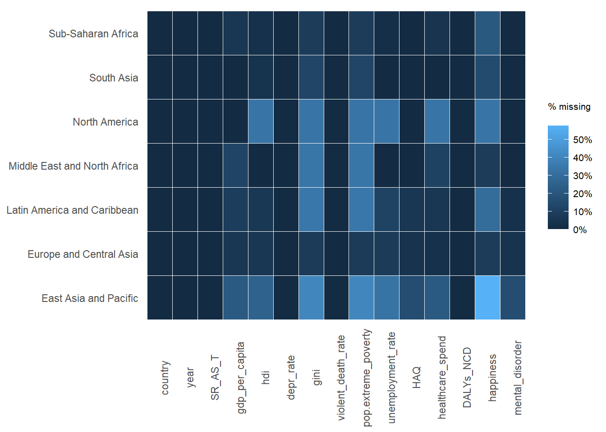
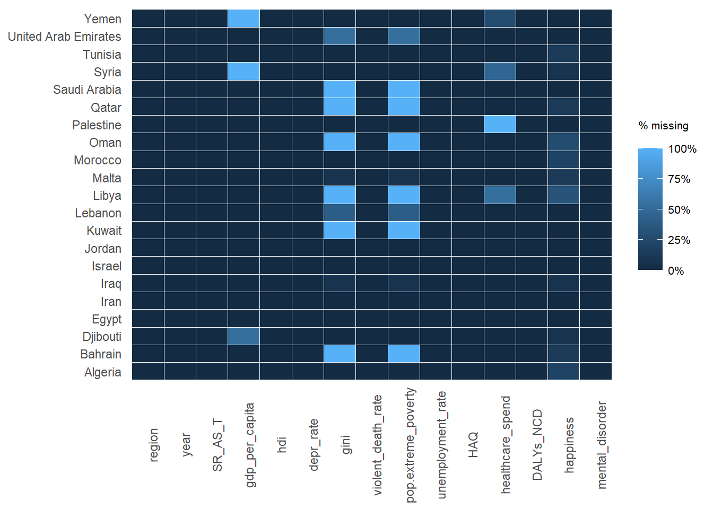
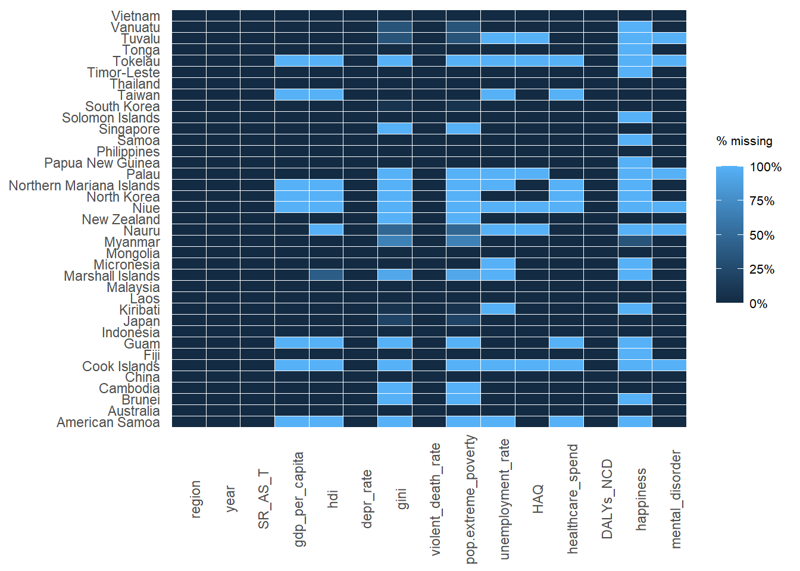
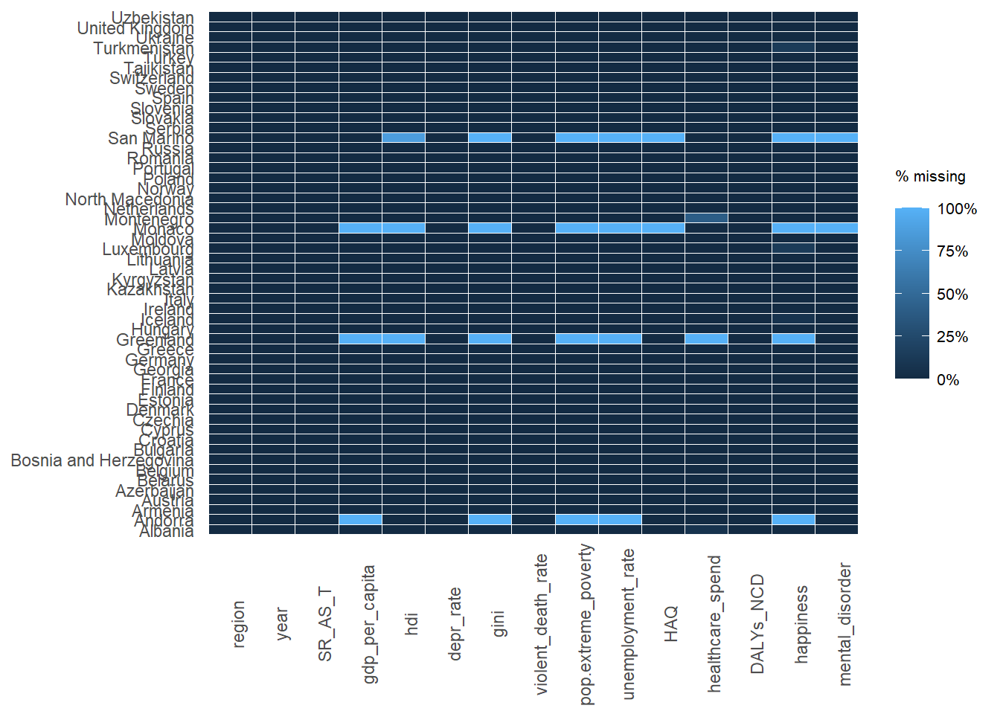

pacman::p_load(tidyverse, ExPanDaR, knitr)
suicide_analysis <- read.csv('data/suicidedata_analysis.csv', header = T)EDA: Analysis of Suicide Rate with Other Parameters
Load Packages and Data Set
Visualising Missing Values
missing.values <- suicide_analysis %>%
pivot_longer(cols = SR_AS_M:mental_disorder,
names_to = "rate",
values_to = "values") %>%
mutate(is.missing = is.na(values)) %>%
group_by(rate, is.missing) %>%
summarise(num.missing = n()) %>%
filter(is.missing==T) %>%
select(-is.missing) %>%
arrange(desc(num.missing))
missing.values %>% kable()| rate | num.missing |
|---|---|
| avg_hrs_worked | 4154 |
| happiness | 3673 |
| healthcare_spend | 2386 |
| gini | 2252 |
| pop.extreme_poverty | 2234 |
| hdi | 981 |
| unemployment_rate | 842 |
| gdp_per_capita | 762 |
| HAQ | 300 |
| mental_disorder | 270 |
prepare_missing_values_graph(df = suicide_analysis
|> select(region, year,
gdp_per_capita:mental_disorder),
ts_id = "region")prepare_missing_values_graph(df = suicide_analysis
|> select(year, gdp_per_capita:mental_disorder),
ts_id = "year")As there is a large amount of missing values between the years 1990 to 2005 for a few variables, we will filter the data down to only include values from 2005 onwards. We will also exclude the variable “Average hours worked” since there is a consistently high proportion of missing values.
prepare_missing_values_graph(df = suicide_analysis
|> filter(year %in% seq(2005,2020,1))
|> select(region, year,
gdp_per_capita:mental_disorder)
|> select(!avg_hrs_worked),
ts_id = "region")
This seems to bring down the proportion of missing values, but there remains areas and variables with a high number of missing values. Let’s take a look at how the missing values are distributed within countries in each region.
missing_val_graph <- function(a){
prepare_missing_values_graph(df = suicide_analysis
|> filter(year %in% seq(2005,2020,1))
|> filter(region == a)
|> select(region, country, year,
gdp_per_capita:mental_disorder)
|> select(!avg_hrs_worked),
ts_id = "country")
}missing_val_graph("Sub-Saharan Africa")missing_val_graph("Middle East and North Africa")
missing_val_graph("South Asia")missing_val_graph("East Asia and Pacific")
missing_val_graph("North America")
missing_val_graph("Europe and Central Asia")